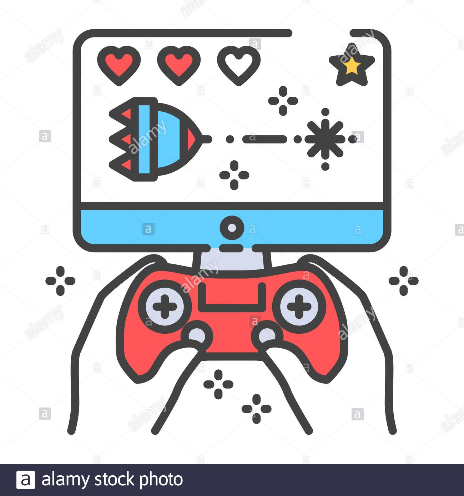

We're learning how to code using HTML and Brackets.
This course will introduce students to the world of web page creation and game design. Students will learn programming concepts and use industry standard web authoring software to develop authentic web sites and video games. Students will also study game theory, design, and development while working with various open-source engines. Coding, graphic development, storyboarding, and animation are just some of the skills built and activities found within this creative course. (This course fits within the STEM Pathway. Look for other STEM courses under Science, Technology & Engineering and Mathematics). Note: students have the opportunity to earn community college credit in Game & Web Design if enrolled in the College Career Pathways (CCP) program. Home